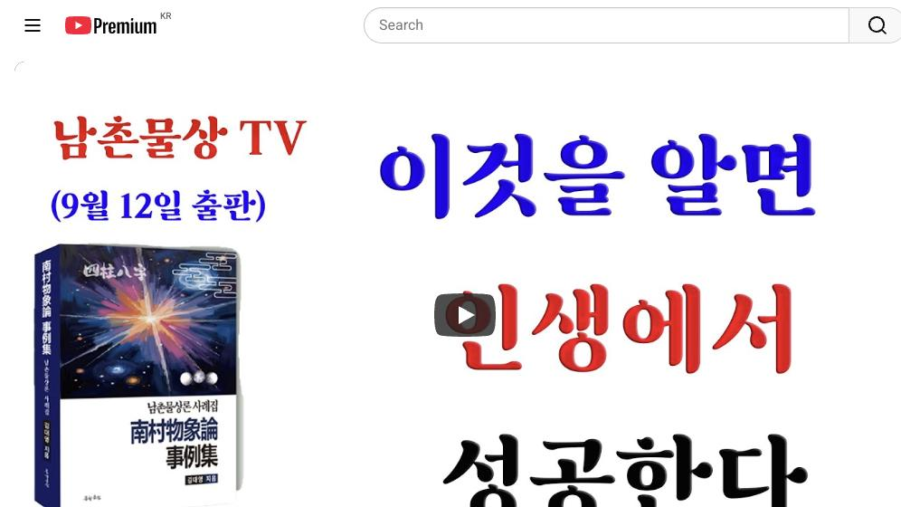

남촌물상TV 전체 문서 › 동영상 V0149
이것을 알면 인생에서 성공한다 | 남촌물상tv

| 문서 번호 | V0149 (동영상) |
|---|---|
| 영상 URL | https://www.youtube.com/watch?v=Xxx3T-SPOUI |
| 영상 ID | Xxx3T-SPOUI |
| 게시일 | 2025-09-25 |
| 길이 | 37:54 (2274초) |
| 조회수 | 465회 (수집 시점 기준) |
| 카테고리 | Education |
| 자막 | ko (자동생성) |
| 수집 시각 | 2026-08-30 19:08 (KST) |
영상 설명 (YouTube 설명 원문 그대로)
#남촌물상론 #사주상담 #수강생모집
상담전화 010~3139~6645
#사주상담 #물상론 #사주 #명리학#성명학 #궁합 #택일 #물형상 #운명학
전체 자막 (269구간 · 타임스탬프 클릭 시 해당 장면으로 이동)
[0:02][음악]
[0:06]남자 사 74세
[0:08]임진 계묘을 경진자 이런 사 좀 제가
[0:11]특이해서 제가 그 설명을 드리려고 한
[0:13]거예요.
[0:15]>> 자 그러면 우선 을목일주입니다. 을목
[0:17]없는게 있죠. 뭐가 없어요?
[0:19]>> 화가 없어요.
[0:20]>> 자 화가 없죠. 그렇죠? 화가 없다.
[0:24]근데 우리가 첫째 얼음 생각할 때
[0:26]을목일줄 항시 항시 뭔가 타고
[0:29]올라가야 된다는 개념이 있어야 살아
[0:31]있어야 돼요. 그 생각이 먼저 있어야
[0:33]돼. 그러면 자이 을목일주가
[0:36]감목이란 나무가 사실 없잖아요.
[0:39]그래서 어 어려움이 있던 데다가 또
[0:42]나무가 살아갈 수 있는 천관이 땅이
[0:44]없다 그 말입니다. 자 그럼 우리가
[0:46]이제 여기에서 재가 진토 축토가 젠데
[0:50]이거 보세요. 진토 축토가 젠데 여기
[0:54]보시면
[0:57]우리는 항시 그랬잖아요. 죄를 뭘로
[0:59]쓸 거냐? 이런 굉장히 중요하다요.이
[1:02]죄를 뭘로 쓸 거냐? 우리가 간의
[1:04]관과 죄의 간법을 보면 나의 죄는
[1:08]토요 나의 죄 저 토의 죄는 뭐예요?
[1:12]토의 죄
[1:13]>> 임수
[1:14]>> 자 물 아니에요?
[1:15]>> 자 그러면
[1:17]>> 쉽게해서 여기에서 물에서 지금 다 그
[1:20]보시면 여기 다 그 결과물이 있는
[1:22]거예요. 그럼 여기서 쉽게 죄를
[1:25]어디서 끌고 오느냐? 천관에 끌은
[1:27]자가 여기서 끌고죠.
[1:29]그 여기서 이제 계수이 꾸온다는
[1:31]얘기는 항시 위에보다 한 개 밑에
[1:34]있는 대에서 돈을 벌어먹고 사내 그
[1:36]얘기입니다. 소위 국가자리
[1:38]대기업자에서 벌어먹고 살 것이냐 근데
[1:41]여기는 한 개 밑에니까 중소 기업이나
[1:43]할 것이다. 그렇게 이해하시면 되고
[1:46]학교로 보자면 여기는 공립 여기는
[1:50]사립 이렇게 구별해서 보셔도 쉽게
[1:52]답을 얻을 수가 있다 그 말입니다.
[1:54]자, 그러면은
[1:57]우리가 잘 보시면지지
[1:59]행동이가 진토진토 있어요. 그렇죠?이
[2:03]나눠서 보면 나눠서 보면 딱 접어서
[2:06]한번 본다고 봅시다. 접어서 보면
[2:09]진토진토 전반 후반전이 뚜렷하게 거의
[2:11]거의 합류가 돼 있는 거예요. 그러면
[2:13]우리가이
[2:15]재물은 뭐냐 그 말이야. 어떤 데서
[2:17]활용할 것이냐? 그러면 여기서 자기가
[2:19]을목이니까 여기에 만약에 인이라는
[2:23]글씨가 오면은 도면은 임묘진이 되죠.
[2:27]인내 합이 되지. 이런 결과가
[2:29]인내라고 이해하시면 되고 그다음에
[2:33]저 진토에서 또 끌어온 자가 뭐가
[2:35]있어요? 관을 끌 수도 있잖아요.
[2:38]>> 관 내 직업을 끌 수 있다. 이렇게
[2:40]볼 수도 있는 거지. 그러면 유금을
[2:42]끌어온 거죠.
[2:43]>> 네.
[2:44]>> 월경 합의 신금의 뿔이 유금을
[2:46]끌어온다 그 말이지. 이제 그렇게
[2:48]보시면 이제 뭘가 뭐가 또 떠오르냐?
[2:52]자, 을경 하의 신금이 됐었다고
[2:54]생각하면 여기서 뭘 끌고 와요?
[2:58]병화를 꾸기 때문에 자격증이 꼭
[3:00]필요하네. 이렇게 해서 정확하게 답을
[3:02]쉽게 얻을 수가 있다 그 말입니다.
[3:04]음. 자, 그러면
[3:07]우리들이 봤을 때 이제 전체지 흐름을
[3:10]놓고 봤을 때
[3:12]을목이 하는 일이 뭐냐? 대관절 네가
[3:16]그럼 여기서 여기 을경 합을 했는데
[3:18]묶여 있다 그 말이죠. 묶여 있을 때
[3:21]활용을 하는 방법이 있고 또 묶이
[3:24]풀어져서 능력을 발휘할 수도 있다 그
[3:26]말입니다. 그러면이 사람 경우는 을경
[3:30]하물에서 신금이 됐을 때는 자격증을
[3:34]가지고 움직일 건데 그 말이고
[3:36]그렇치면은 병화를 끌고죠.
[3:38]>> 네. 병화에서 자격증도 되지만 국가
[3:41]자격증 국가에 관련된 쪽에 관계성이
[3:43]있는 거예요. 그러면 여기에 뿌리가
[3:45]신금이니까이 국가 아니에요?
[3:48]>> 네.
[3:49]>> 그러면 금의 뿌리가 유금이 여기
[3:50]국가에서 뭔가 있겠네로 생각하시면
[3:52]이해가 되죠?
[3:53]>> 네.
[3:53]>> 자, 그렇게 봅시다. 그러면이
[3:57]사람이 직업상에 보면은 어떻게 전반적
[3:59]후반에 나라져 있죠?
[4:01]전반에 나와 있어요. 그러면 자기가
[4:05]관을 쓴 직업은 42세 이전에
[4:10]관을 쓸 수가 있고 그 말이고 42세
[4:13]이후에는 관이 와본 거죠. 그죠?
[4:17]자, 그러면 쉽게 얘기해서
[4:19]관을 썼다는 얘기는 여기서 그 관에
[4:21]대한 일을 했을 거고 그 말이고 관이
[4:24]직접 끝에까지 다 와버렸다는 얘기는
[4:26]그 관을 안 써도 된다는 얘기입니다.
[4:29]이게 특징이에요.
[4:32]그러면이 항시 제가 이런 것 염두해
[4:34]두시라고 하는 얘기예요. 없는 관이
[4:37]관이 예를 들어서 없을 때는 관의
[4:38]행위도 할 수가 있는데 관이 아을
[4:41]때는 관을 안 써도 돼. 저절로 쓴다
[4:43]그 말이지. 그죠? 있는 것이 저도
[4:46]쓰면 되잖아요. 이제 그렇게
[4:47]이해하시면 돼. 자, 그러면이 사람의
[4:50]이제에 컷 성장 기록을 보자 그
[4:53]말입니다. 그럼이 사람이 직업을 뭐
[4:55]뭐 직업을 참 애매해서이 사람하고 좀
[4:57]그 어 심각하게 생각해 봤어요. 뭔
[5:01]얘기냐면
[5:03]자기는 교육자를 했다. 선생을 했다
[5:05]이렇게 얘기를 해.
[5:07]근데 나는 너하고 선생하고 관계는
[5:09]별로 없다. 어 근데 자기는 선생을
[5:13]했다고 그런는데 나는 선생이 아니다
[5:17]했거든요.
[5:17]>> 안 보인다.
[5:18]>> 아 없다. 그럼 여기 선생이라는 거
[5:21]직업 자체를 봤을 때 안 나타난게이
[5:25]사람은 을경합 신급이 자격지 뿌리가
[5:28]진주학금이에요.
[5:29]>> 유금 행위를 해야 되거든요.
[5:32]행동면에서 유금행위 지금 하불에서이
[5:36]을목이 없어진 거란 말이야. 쉽게
[5:37]해서 그죠? 그래서 우리는 보통 보면
[5:41]을목이 뿌리가 묘목 있다가 있으니까
[5:43]잘린네. 그 말하고 같은 얘기예요.
[5:45]만약에 이런 점도 생각을 해 보셔야
[5:48]돼. 여기서 하나 더 깊이 생각한
[5:50]것은 제가 을경 하 을목이 사라진다
[5:52]그랬죠. 뿌리
[5:54]>> 뿌리가 있는 건 사라져도 살아 뿌리가
[5:56]남아 있는 거예요. 이거 이해하셔야
[5:57]돼요. 자 우리가
[6:00]나이 자 하초를 같은 보면 자 보면은
[6:03]가을에서 싹 비벼 배워불며 나면 또
[6:05]그 뿌리가 또 세싹이 나죠. 이게
[6:07]을목이에요.
[6:08]>> 그러니까 자연의 이체를 가지고 설명을
[6:10]해 보면
[6:11]>> 을목이 위에 그 이파리가 다 잘라
[6:14]나가 없더라도 뿌리가 살아 있는 것은
[6:17]살아 있다라고 이해하시면 된다 그
[6:19]말입니다.
[6:20]이해하셨죠? 어. 자 그러면
[6:24]월경합의 진유학금이니까
[6:27]금의 행위예요. 그죠?이 생각을
[6:30]하셔야 돼. 4는 진유학금 자
[6:33]진유학금 사유축 다 해서 보면은 이게
[6:36]이과 성향이 있네. 근데 문제는
[6:40]사회축 해자축 탁수가 될 수 있고
[6:42]신장이 될 수 있는 거예요. 문제가
[6:44]있다라고 이걸 원하셔야 돼. 그 말은
[6:46]무슨 얘기냐? 을경 합이 풀리면
[6:50]신자진이 됩니다. 그렇죠? 신자진
[6:53]해자축 탁수 돼요, 안 돼요? 되죠.
[6:56]탁수 성향이 있내라고 보시면 되죠.
[6:58]그럼 네가 그때 환경이 굉장히
[7:01]어려움에 처 있겠다라고 얼른 감을
[7:03]잡을 수 있지 않아요. 자, 탁수가
[7:06]되는데 뭔 일이 됐겠어요? 안 되죠.
[7:08]그럼 환경이 어렵다는 얘기야. 학교
[7:10]생일 때는 어, 이제 그 관계 선
[7:11]되죠. 자, 그래서 학교 성향을 볼
[7:14]때 이제 덮어 봤다 그 말입니다.
[7:16]자, 17살 때가 무슨 년이에요?
[7:18]>> 무신.
[7:19]>> 예.
[7:19]>> 무신.
[7:20]>> 무신. 자, 17살 때가 무신년이고.
[7:24]자, 17세. 18세가 뭔데요?
[7:26]>> 기.
[7:27]>> 자, 기후. 그다음에
[7:29]>> 자, 19세가
[7:31]>> 경술.
[7:32]>> 경술.
[7:34]자, 이렇게 해서 봅시다.
[7:37]그러면 지금이 이에서이 18세 때
[7:41]보시면
[7:43]감목을 끌고 올 거 아닙니까?
[7:44]>> 네.
[7:45]>> 그죠? 끌고 오면 자기가 임묘진이
[7:47]된다는 얘기예요. 그래서 대학을
[7:48]간다는 생각을 갖고 있어 없어요.
[7:50]아, 네가 마음쪽에 대학을 가고
[7:52]싶다는 생각을 가지고 있네라고 답을
[7:53]얼어넣을 수 있죠.이
[7:55]안신법을 해서 쓰라 그랬어요. 끌어온
[7:57]거 법칙 이해 다 안신법 이해하는
[7:59]거예요. 그러면 갑목을 끌으면
[8:01]임묘지이 될 거 아닙니까? 그럼 나는
[8:03]타고 올라간다는 생각을 해서 할
[8:05]공부를 했 건데.
[8:08]근데 이제 쉽게 경수를 해서 문제가
[8:10]경수 온 거예요. 자, 경술이 오니까
[8:13]어떤 현상이 왔어요? 자, 같은 경이
[8:15]풀어졌죠?
[8:16]>> 네.
[8:16]>> 풀어지면
[8:18]여기에서 계수가 신자진이 뒤 될 거고
[8:22]진술충도 된다 그 말입니다. 그죠?
[8:25]그럼 대학교가 못 가? 못 갔지
[8:26]않냐? 나는 이제 주장을 한 거지.
[8:29]음. 당신 그렇게 대학 못 가요. 아
[8:31]어렵다. 그랬더니 하는 얘기가 그때
[8:34]학교를 사실 못 갔다. 근데 이거
[8:36]선생 그래 그 말이야. 그다음에
[8:37]뭡니까? 여기 대운이여 연도가 자
[8:40]신신
[8:41]>> 신혜죠.
[8:43]그럼이 이때 이때 내가 너와가 틀면
[8:45]국가적인 뭔 일 했을 건데 그
[8:47]말이에요. 신이라는 것이는 합이
[8:51]풀어져 있지만 신금이 살아 있잖아요.
[8:53]그럼 그렇게도 볼 수 있고 을경
[8:56]합으로 그냥 놔두고 신실으로 볼 수도
[8:59]있단 말이야. 왜냐면 병화를 끌어오기
[9:00]때문에. 그러면 풀어줘도 상관없는
[9:03]거예요. 그러면 자 금으로만 돼
[9:05]있는데이
[9:07]신금이 병화를 끌고 올 거 아닙니까?
[9:09]그래 너 국가적인 일을 뭐 했지
[9:11]않냐? 갈지 않냐? 그래 제가
[9:13]물었어요. 그러면 뿌리가 신금의
[9:15]뿌리가 뭐예요? 항시 뿌리 존재
[9:17]유금이죠.
[9:17]>> 유금이
[9:18]>> 유금이 국과자 유금이 됐다. 그래서
[9:20]너 네가 그 몸을 쓰는 운동 선수로
[9:24]했냐데 한번 물어봤어요. 근데 그것이
[9:26]아니야. 3삼사관학교로 간 거야.
[9:29]그때 당시. 그때 이제에 저희가 그때
[9:33]학교 그 고등학교 3학년 때 최초에
[9:36]그때 이제 그 69년도예요.
[9:39]그때부터 이제 삼상한 얘기 나오가
[9:42]70년대부터 일기생 모집했어요. 그때
[9:45]삼상학교뭐 처음 생길 때입니다. 아
[9:47]근데이 사람이 보니까 국이래요. 국이
[9:50]1년에 두시복 나중 그랬거든요. 근데
[9:52]그걸 뽑아서 했는데 국이 삼사라해요.
[9:54]그래서 그럼 삼사가 간놈이 무슨 네가
[9:56]선생을 해? 더 결혼 선생 할 거.
[9:59]우리 그때 결혼이라고 있었죠. 우리
[10:00]대일 때. 그 결혼하지는 결혼 선생을
[10:03]하는 거예요. 아
[10:04]>> 최육 선생
[10:05]>> 최육 선생 아니고 결혼 결혼도 한다고
[10:07]그때 훈련 받고 그랬잖아요. 옛날에.
[10:09]>> 그걸 담당할 때이 사람이 한 거예요.
[10:12]>> 그래서 없는 금을 쓴 거지요.
[10:15]>> 그러다가 너 그만 둘 때가 언제냐?
[10:18]이때 그만 뒀지. 무신 대운에 그만
[10:20]뒀지 않으니까 그랬다 이거예요.
[10:22]정확히 떨어져 버체가
[10:24]드러난 거지. 실체가 그럼 우리가
[10:27]보통 이런 사리 같은 데는 대부분
[10:29]보면 뭐 윤리라든가 이런 부분에서
[10:32]보통 하나씩 주지요. 왜? 자를 순
[10:34]없으니까.
칠판 원국 판독 (영상 프레임을 AI가 시각 판독 · 원판 대조 필수)
坤造
천간
己
천간
丙
천간
甲
천간
癸
지지
丑
지지
寅
지지
戌
지지
酉
판독 신뢰도: 중간
판독 노트: 장강의, 년월일시 라벨, 합충 주석, 후반 대운 강조 · 시점 28:26 · 해당 장면 보기↗

자막은 YouTube에서 제공하는 한국어 자동음성인식(ASR) 트랙의 원문입니다. 고유명사·한자 용어·숫자 표기에 자동인식 특유의 오류가 있을 수 있어, 원문을 가능한 한 그대로 보존했습니다. 위에 칠판 원국 판독 섹션이 있는 영상은 화면 프레임을 AI가 시각 판독한 것으로 신뢰도 표기를 확인하고, 없는 영상은 화면 도표가 문서에 포함되지 않습니다.